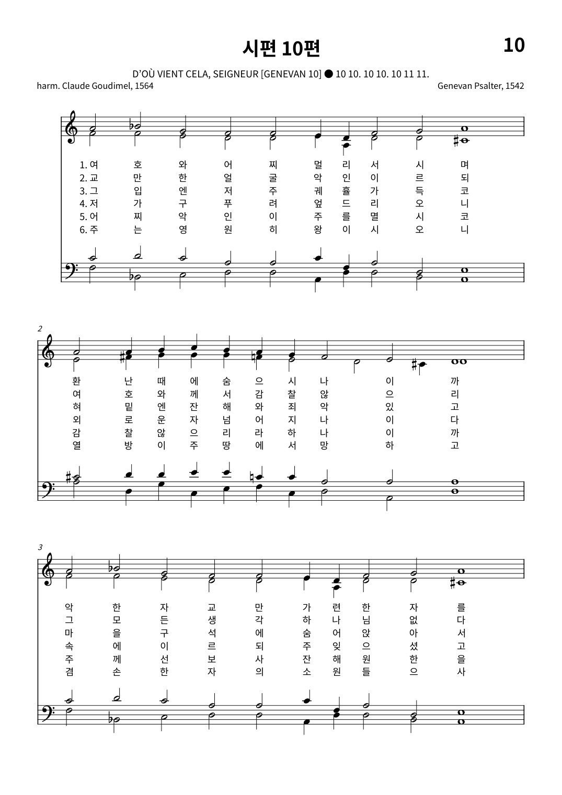

시편 10편
D’OÙ VIENT CELA, SEIGNEUR [GENEVAN 10] · 10 10. 10 10. 10 11 11.
곡조: Genevan Psalter, 1542 · 화성: Claude Goudimel, 1564 · 가사: 개역한글판 시편 10편 편역(AI 초벌 편역판 · 신학 감수 전) · 6절
악보 PDF MusicXML(출력용) MusicXML(반주용, 전주·반복 포함) 개역한글 시편 10편 읽기

가사
1절
여호와 어찌 멀리 서시며
환난 때에 숨으시나이까
악한 자 교만 가련한 자를
심히 핍박하고 억누르니
제 꾀에 빠지게 하옵소서
악인은 제 맘 소욕을 자랑코
탐욕스런 자 주 멸시하도다
여호와 어찌 멀리 서시며
환난 때에 숨으시나이까
악한 자 교만 가련한 자를
심히 핍박하고 억누르니
제 꾀에 빠지게 하옵소서
악인은 제 맘 소욕을 자랑코
탐욕스런 자 주 멸시하도다
2절
교만한 얼굴 악인 이르되
여호와께서 감찰 않으리
그 모든 생각 하나님 없다
그 길은 언제나 견고하고
주 심판 높아 보지 못하며
대적 멸시코 속으로 이르되
흔들림 없고 환난 안 당하리
교만한 얼굴 악인 이르되
여호와께서 감찰 않으리
그 모든 생각 하나님 없다
그 길은 언제나 견고하고
주 심판 높아 보지 못하며
대적 멸시코 속으로 이르되
흔들림 없고 환난 안 당하리
3절
그 입엔 저주 궤휼 가득코
혀 밑엔 잔해와 죄악 있고
마을 구석에 숨어 앉아서
무죄한 자를 몰래 죽이고
그 눈은 외로운 자 엿보니
사자가 굴에 엎드림과 같이
가련한 자를 그물로 잡도다
그 입엔 저주 궤휼 가득코
혀 밑엔 잔해와 죄악 있고
마을 구석에 숨어 앉아서
무죄한 자를 몰래 죽이고
그 눈은 외로운 자 엿보니
사자가 굴에 엎드림과 같이
가련한 자를 그물로 잡도다
4절
저가 구푸려 엎드리오니
외로운 자 넘어지나이다
속에 이르되 주 잊으셨고
얼굴을 가려 영영 안 보리
여호와여 일어나옵소서
하나님이여 손을 드옵소서
가난한 자를 잊지 마옵소서
저가 구푸려 엎드리오니
외로운 자 넘어지나이다
속에 이르되 주 잊으셨고
얼굴을 가려 영영 안 보리
여호와여 일어나옵소서
하나님이여 손을 드옵소서
가난한 자를 잊지 마옵소서
5절
어찌 악인이 주를 멸시코
감찰 않으리라 하나이까
주께선 보사 잔해 원한을
살피사 손으로 갚으시니
외로운 자 주를 의지하니
주는 고아를 도우시는 자라
악인의 팔을 꺾으시옵소서
어찌 악인이 주를 멸시코
감찰 않으리라 하나이까
주께선 보사 잔해 원한을
살피사 손으로 갚으시니
외로운 자 주를 의지하니
주는 고아를 도우시는 자라
악인의 팔을 꺾으시옵소서
6절
주는 영원히 왕이시오니
열방이 주 땅에서 망하고
겸손한 자의 소원 들으사
저희 마음을 예비하시며
귀를 기울여 들으시오며
고아와 약자 위해 심판하사
세상 사람이 위협치 못하리
주는 영원히 왕이시오니
열방이 주 땅에서 망하고
겸손한 자의 소원 들으사
저희 마음을 예비하시며
귀를 기울여 들으시오며
고아와 약자 위해 심판하사
세상 사람이 위협치 못하리